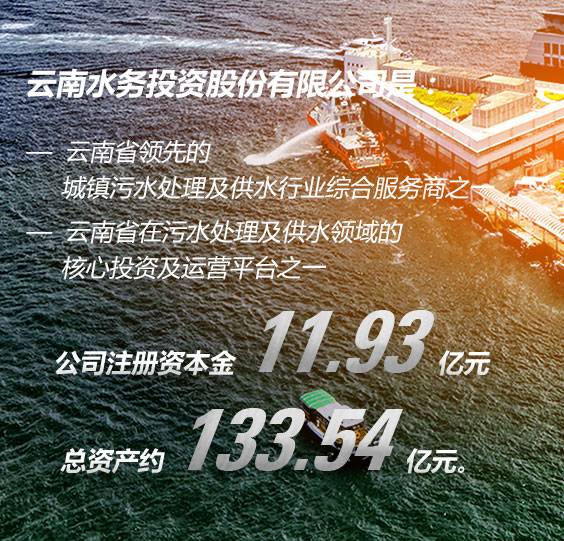
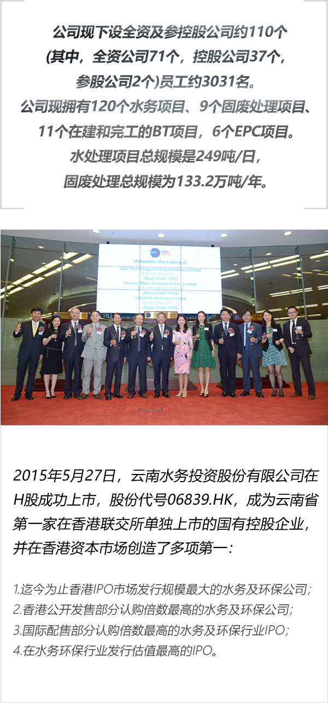
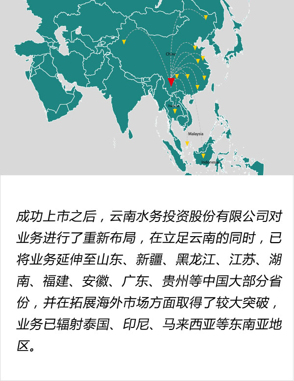

集团介绍
INTRODUCTION
为加快推进云南省“两污”项目建设，经云南省政府批准，2009年4月，云南城投出资组建云南省水务产业投资有限公司，该公司是云南省政府授权的城镇两污处理设施建设和运营管理的投融资主体、省级水务投资项目的具体实施机构。2011年6月，成立混合所有制公司即云南水务产业投资发展有限公司。2014年6月根据省国资委批复，公司完成股份制改革，正式更名为云南水务投资股份有限公司。

云南水务投资股份有限公司的公司定位为“城市环境综合服务商，利用我们的技术和资金，创造环境友好型城市。”在这一定位的指引下，云南水务自成立以来实现了快速发展。云南水务在保持原水供应、自来水供应、污水处理等涵盖水务行业全范畴的“大水务”模式的同时，已成功从水务拓展至固废领域，开展垃圾焚烧发电、工业危废处理、医废处理、餐厨垃圾处理、污泥处置等业务，提供包括设计、投资、建设、运营及维护、整体解决方案及核心技术系统集成服务。


云南水务将利用自身优势，紧密结合云南实际，围绕绿色经济强省、民族文化强省和中国面向西南开放的桥头堡战略目标，紧紧抓住国家“一带一路”战略实施和“PPP 投融资模式”推广的契机，秉承敬畏心、感恩心、自信心的企业文化，保持谨慎、专业、严谨的工作态度，致力成为立足云南、面向全国、走向南亚及东南亚，拥有核心技术及强大投融资能力，具备核心竞争力及社会影响力的城市环境综合服务商。